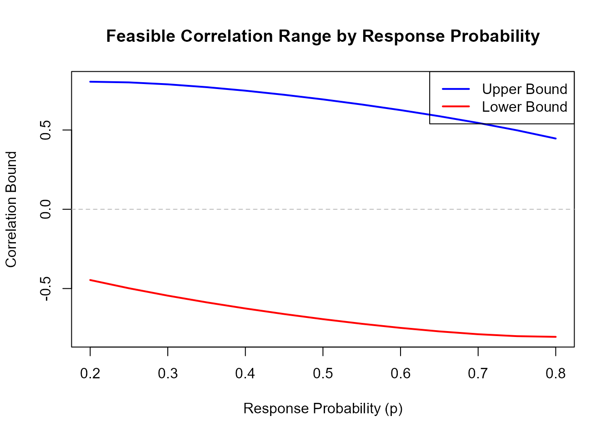

library(CorOncoEndpoints)
set.seed(123)Overview
This vignette demonstrates advanced usage of the
CorOncoEndpoints package, including:
- Working with the three-endpoint framework (OS + PFS + Response)
- Understanding implied correlations
- Sensitivity analyses
- Complex simulation studies
- Visualization techniques
The Three-Endpoint Framework
When generating all three endpoints simultaneously, understanding the correlation structure is crucial.
Key Insight
When you specify: - p: Response probability -
hazard_OS: OS hazard rate - hazard_PFS: PFS
hazard rate
- rho_tte_resp: Correlation between OS and
Response
The correlation between PFS and Response is automatically determined by the model structure (Fleischer model).
Example: Understanding Implied Correlations
# Parameters
p <- 0.4
hazard_OS <- 0.05
hazard_PFS <- 0.08
rho_OS_Response <- 0.3
# Calculate implied PFS-Response correlation
rho_PFS_Response <- CorResponsePFS(
p = p,
hazard_OS = hazard_OS,
hazard_PFS = hazard_PFS,
rho_OS_Response = rho_OS_Response,
copula = "Clayton"
)
cat("Specified OS-Response correlation:", rho_OS_Response, "\n")
#> Specified OS-Response correlation: 0.3
cat("Implied PFS-Response correlation:", round(rho_PFS_Response, 3), "\n")
#> Implied PFS-Response correlation: 0.243
# Verify with simulation
data <- rOncoEndpoints(
nsim = 1000,
n = 200,
p = p,
hazard_OS = hazard_OS,
hazard_PFS = hazard_PFS,
rho_tte_resp = rho_OS_Response,
copula = "Clayton"
)
# Empirical correlations
sim1 <- subset(data, simID == 1)
cat("\nEmpirical OS-Response correlation:",
round(cor(sim1$OS, sim1$Response), 3), "\n")
#>
#> Empirical OS-Response correlation: 0.266
cat("Empirical PFS-Response correlation:",
round(cor(sim1$PFS, sim1$Response), 3), "\n")
#> Empirical PFS-Response correlation: 0.32Correlation Bounds in Three-Endpoint Framework
The feasible range for PFS-Response correlation depends on both the response probability AND the hazard rates:
# General TTE-Response bounds (depends only on p)
general_bounds <- CorBoundResponseTTE(p = 0.4)
cat("General TTE-Response bounds:",
round(general_bounds[1], 3), "to", round(general_bounds[2], 3), "\n")
#> General TTE-Response bounds: -0.626 to 0.748
# PFS-Response bounds in OS-PFS-Response framework
pfs_bounds <- CorBoundResponsePFS(
p = 0.4,
hazard_OS = 0.05,
hazard_PFS = 0.08
)
cat("PFS-Response bounds (3-endpoint):",
round(pfs_bounds[1], 3), "to", round(pfs_bounds[2], 3), "\n")
#> PFS-Response bounds (3-endpoint): -0.539 to 0.576Notice that the PFS-specific bounds are typically narrower.
Sensitivity Analysis
Effect of Hazard Ratio on Correlations
# Fixed parameters
p <- 0.5
hazard_OS <- 0.04
rho_OS <- 0.3
# Varying hazard ratios
hazard_ratios <- seq(1.5, 3.0, by = 0.1)
hazard_PFS_vec <- hazard_OS * hazard_ratios
# Calculate implied PFS-Response correlations
rho_PFS_vec <- sapply(hazard_PFS_vec, function(h_pfs) {
CorResponsePFS(p, hazard_OS, h_pfs, rho_OS, copula = "Clayton")
})
# Plot
plot(hazard_ratios, rho_PFS_vec, type = "b",
xlab = "Hazard Ratio (PFS/OS)",
ylab = "Correlation",
main = "Effect of Hazard Ratio on PFS-Response Correlation",
ylim = range(c(rho_PFS_vec, rho_OS)))
abline(h = rho_OS, lty = 2, col = "red", lwd = 2)
legend("topright",
legend = c("PFS-Response correlation",
paste0("OS-Response correlation (", rho_OS, ")")),
lty = c(1, 2), col = c("black", "red"), pch = c(1, NA), lwd = c(1, 2))Interpretation: As the hazard ratio increases (PFS becomes shorter relative to OS), the PFS-Response correlation decreases.
Effect of Response Probability
# Varying response probabilities
p_vec <- seq(0.2, 0.8, by = 0.05)
# Calculate bounds for each p
bounds_matrix <- sapply(p_vec, CorBoundResponseTTE)
# Plot
plot(p_vec, bounds_matrix[2, ], type = "l", col = "blue", lwd = 2,
ylim = range(bounds_matrix), xlab = "Response Probability (p)",
ylab = "Correlation Bound",
main = "Feasible Correlation Range by Response Probability")
lines(p_vec, bounds_matrix[1, ], col = "red", lwd = 2)
abline(h = 0, lty = 2, col = "gray")
legend("topright", legend = c("Upper Bound", "Lower Bound"),
col = c("blue", "red"), lty = 1, lwd = 2)
Complex Simulation Studies
Multi-Arm Trial Simulation
# Three-arm trial: Placebo, Low Dose, High Dose
data_multi <- rOncoEndpoints(
nsim = 500,
group = c("Placebo", "Low Dose", "High Dose"),
n = c(100, 100, 100),
p = c(0.2, 0.35, 0.5),
hazard_OS = c(0.08, 0.06, 0.04),
hazard_PFS = c(0.12, 0.10, 0.08),
rho_tte_resp = c(0.2, 0.3, 0.4),
copula = "Frank"
)
# Validate results
validation_multi <- CheckSimResults(
dataset = data_multi,
p = c(Placebo = 0.2, `Low Dose` = 0.35, `High Dose` = 0.5),
hazard_OS = c(Placebo = 0.08, `Low Dose` = 0.06, `High Dose` = 0.04),
hazard_PFS = c(Placebo = 0.12, `Low Dose` = 0.10, `High Dose` = 0.08),
rho_tte_resp = c(Placebo = 0.2, `Low Dose` = 0.3, `High Dose` = 0.4),
copula = "Frank"
)
# Show median survival times
medians <- validation_multi[validation_multi$Endpoint %in%
c("OS_Median", "PFS_Median"),
c("Group", "Endpoint", "Empirical", "Theoretical")]
print(medians, n = Inf)
#> # A tibble: 6 × 4
#> Group Endpoint Empirical Theoretical
#> <chr> <chr> <dbl> <dbl>
#> 1 Placebo OS_Median 8.68 8.66
#> 2 Placebo PFS_Median 5.80 5.78
#> 3 Low Dose OS_Median 11.6 11.6
#> 4 Low Dose PFS_Median 6.95 6.93
#> 5 High Dose OS_Median 17.2 17.3
#> 6 High Dose PFS_Median 8.68 8.66Time-Varying Sample Size
# Simulate different sample sizes per simulation
# (Useful for adaptive designs)
n_per_sim <- sample(80:120, size = 100, replace = TRUE)
# Generate data with varying n
# Note: rOncoEndpoints requires fixed n per group, so we'll
# generate multiple datasets
results_list <- lapply(1:10, function(i) {
rOncoEndpoints(
nsim = 1,
n = n_per_sim[i],
p = 0.4,
hazard_OS = 0.05,
rho_tte_resp = 0.3,
copula = "Clayton"
)
})
# Combine results
data_varying <- do.call(rbind, results_list)
table(data_varying$simID)
#>
#> 1
#> 967Copula Parameter Exploration
Relationship Between Correlation and Theta
# For different correlations, calculate copula parameters
rho_vec <- seq(0.1, 0.6, by = 0.05)
p <- 0.4
theta_clayton <- sapply(rho_vec, function(r) {
CopulaParamResponseTTE(p, r, "Clayton")
})
theta_frank <- sapply(rho_vec, function(r) {
CopulaParamResponseTTE(p, r, "Frank")
})
# Plot
par(mfrow = c(1, 2))
plot(rho_vec, theta_clayton, type = "b", col = "blue",
xlab = "Correlation", ylab = "Theta",
main = "Clayton Copula: Correlation vs Theta")
plot(rho_vec, theta_frank, type = "b", col = "red",
xlab = "Correlation", ylab = "Theta",
main = "Frank Copula: Correlation vs Theta")
Practical Applications
Application 1: Endpoint Selection Study
Compare power for different endpoint choices:
# Scenario: Which endpoint provides better power?
# Generate data for multiple scenarios
# OS only
data_os <- rOncoEndpoints(
nsim = 500,
group = c("Treatment", "Control"),
n = c(150, 150),
hazard_OS = c(0.05, 0.07)
)
# Response only
data_resp <- rOncoEndpoints(
nsim = 500,
group = c("Treatment", "Control"),
n = c(150, 150),
p = c(0.4, 0.3)
)
# OS + Response
data_both <- rOncoEndpoints(
nsim = 500,
group = c("Treatment", "Control"),
n = c(150, 150),
p = c(0.4, 0.3),
hazard_OS = c(0.05, 0.07),
rho_tte_resp = c(0.3, 0.2),
copula = "Clayton"
)
# Calculate effect sizes for each endpoint type
# (Analysis code would go here)Application 2: Correlation Impact Study
How does the correlation structure affect trial outcomes?
# Generate data with different correlation structures
correlations <- c(0.1, 0.3, 0.5)
data_list <- lapply(correlations, function(rho) {
rOncoEndpoints(
nsim = 200,
group = "Treatment",
n = 100,
p = 0.4,
hazard_OS = 0.05,
rho_tte_resp = rho,
copula = "Clayton"
)
})
# Compare variability in endpoints across correlations
variances <- sapply(data_list, function(d) {
c(
var_OS = var(d$OS),
var_Response = var(d$Response)
)
})
colnames(variances) <- paste("rho =", correlations)
print(round(variances, 3))
#> rho = 0.1 rho = 0.3 rho = 0.5
#> var_OS 396.565 399.321 391.955
#> var_Response 0.241 0.240 0.240Application 3: Model Misspecification Study
What happens if we assume independence when data are correlated?
# Generate correlated data
data_corr <- rOncoEndpoints(
nsim = 1000,
n = 200,
p = 0.4,
hazard_OS = 0.05,
rho_tte_resp = 0.4,
copula = "Clayton"
)
# Analyze assuming independence vs accounting for correlation
# (Statistical analysis code would go here)
# Calculate empirical correlation
sim1_corr <- subset(data_corr, simID == 1)
cat("True correlation:", 0.4, "\n")
#> True correlation: 0.4
cat("Empirical correlation:",
round(cor(sim1_corr$OS, sim1_corr$Response), 3), "\n")
#> Empirical correlation: 0.433Visualization Techniques
Correlation Structure Visualization
# Generate data
data_viz <- rOncoEndpoints(
nsim = 1,
group = c("Treatment", "Control"),
n = c(200, 200),
p = c(0.5, 0.3),
hazard_OS = c(0.04, 0.06),
hazard_PFS = c(0.08, 0.10),
rho_tte_resp = c(0.4, 0.2),
copula = "Frank"
)
# Scatter plot: OS vs Response by group
par(mfrow = c(1, 2))
for (grp in c("Treatment", "Control")) {
d <- subset(data_viz, Group == grp)
plot(d$OS, d$Response,
main = paste(grp, "Group"),
xlab = "Overall Survival",
ylab = "Response (0/1)",
pch = 16, col = ifelse(d$Response == 1, "blue", "red"))
legend("topright",
legend = c("Responder", "Non-responder"),
col = c("blue", "red"), pch = 16)
}Best Practices
-
Always validate: Use
CheckSimResults()to ensure simulations match theory -
Check bounds: Use
CorBoundResponseTTE()before specifying correlations - Understand three-endpoint model: Remember that PFS-Response correlation is derived
- Choose appropriate copula: Clayton for positive correlations only, Frank for flexibility
- Use adequate simulations: At least 1000 simulations for stable results
- Document assumptions: Clearly state hazard rates, correlations, and copula choices
Summary
This vignette covered:
- The three-endpoint framework and implied correlations
- Sensitivity analyses for key parameters
- Complex simulation study designs
- Copula parameter exploration
- Practical applications
- Visualization techniques
For theoretical details, see the “Theoretical Background” vignette.